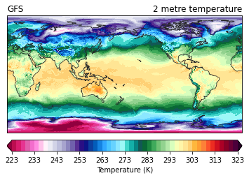

Brian Blaylock
July 27, 2021
National Blend of Models Data¶
[1]:
from herbie.archive import Herbie
from toolbox.cartopy_tools import common_features, pc
from paint.standard2 import cm_tmp
import matplotlib.pyplot as plt
import cartopy.crs as ccrs
[7]:
H = Herbie('2021-07-11 13:00',
model='nbm', fxx=1,
product='co')
🏋🏻♂️ Found 2021-Jul-11 13:00 UTC F01 [NBM] [product=co] GRIB2 file from aws and index file from aws.
[8]:
H.SOURCES
[8]:
{'aws': 'https://noaa-nbm-grib2-pds.s3.amazonaws.com/blend.20210711/13/core/blend.t13z.core.f001.co.grib2'}
[9]:
x = H.xarray('TMP:2 m above')
---------------------------------------------------------------------------
AssertionError Traceback (most recent call last)
~/anaconda3/envs/basic38/lib/python3.8/site-packages/pandas/core/internals/construction.py in _finalize_columns_and_data(content, columns, dtype)
897 try:
--> 898 columns = _validate_or_indexify_columns(contents, columns)
899 except AssertionError as err:
~/anaconda3/envs/basic38/lib/python3.8/site-packages/pandas/core/internals/construction.py in _validate_or_indexify_columns(content, columns)
945 # caller's responsibility to check for this...
--> 946 raise AssertionError(
947 f"{len(columns)} columns passed, passed data had "
AssertionError: 7 columns passed, passed data had 8 columns
The above exception was the direct cause of the following exception:
ValueError Traceback (most recent call last)
<ipython-input-9-23e415b225d6> in <module>
----> 1 x = H.xarray('TMP:2 m above')
~/BB_python/HRRR_archive_download/herbie/archive.py in xarray(self, searchString, backend_kwargs, remove_grib, **download_kwargs)
600
601 # Download file if local file does not exists
--> 602 local_file = self.get_localFilePath(searchString=searchString)
603
604 # Only remove grib if it didn't exists before we download it
~/BB_python/HRRR_archive_download/herbie/archive.py in get_localFilePath(self, searchString)
366 if searchString is not None:
367 # Reassign the index DataFrame with the requested searchString
--> 368 self.idx_df = self.read_idx(searchString)
369
370 # Get a list of all GRIB message numbers. We will use this
~/BB_python/HRRR_archive_download/herbie/archive.py in read_idx(self, searchString)
422
423 read_idx = r.text.split('\n')[:-1] # last line is empty
--> 424 df = pd.DataFrame([i.split(':') for i in read_idx],
425 columns=['grib_message', 'start_byte',
426 'reference_time', 'variable',
~/anaconda3/envs/basic38/lib/python3.8/site-packages/pandas/core/frame.py in __init__(self, data, index, columns, dtype, copy)
692 # ndarray], Index, Series], Sequence[Any]]"
693 columns = ensure_index(columns) # type: ignore[arg-type]
--> 694 arrays, columns, index = nested_data_to_arrays(
695 # error: Argument 3 to "nested_data_to_arrays" has incompatible
696 # type "Optional[Collection[Any]]"; expected "Optional[Index]"
~/anaconda3/envs/basic38/lib/python3.8/site-packages/pandas/core/internals/construction.py in nested_data_to_arrays(data, columns, index, dtype)
481 columns = ensure_index(data[0]._fields)
482
--> 483 arrays, columns = to_arrays(data, columns, dtype=dtype)
484 columns = ensure_index(columns)
485
~/anaconda3/envs/basic38/lib/python3.8/site-packages/pandas/core/internals/construction.py in to_arrays(data, columns, dtype)
797 arr = _list_to_arrays(data)
798
--> 799 content, columns = _finalize_columns_and_data(arr, columns, dtype)
800 return content, columns
801
~/anaconda3/envs/basic38/lib/python3.8/site-packages/pandas/core/internals/construction.py in _finalize_columns_and_data(content, columns, dtype)
899 except AssertionError as err:
900 # GH#26429 do not raise user-facing AssertionError
--> 901 raise ValueError(err) from err
902
903 if len(contents) and contents[0].dtype == np.object_:
ValueError: 7 columns passed, passed data had 8 columns
[7]:
ax = common_features(crs=x.herbie.crs)
p = ax.pcolormesh(x.longitude, x.latitude, x.t2m,
transform=pc,
**cm_tmp(units='K').cmap_kwargs)
plt.colorbar(p, ax=ax,
orientation='horizontal', pad=.05,
**cm_tmp(units='K').cbar_kwargs)
ax.set_title(x.t2m.GRIB_name, loc='right')
ax.set_title(f"GFS", loc='left')
[7]:
Text(0.0, 1.0, 'GFS')

[8]:
ax = common_features(crs=ccrs.Geostationary(central_longitude=-100))
p = ax.pcolormesh(x.longitude, x.latitude, x.t2m,
transform=pc,
**cm_tmp(units='K').cmap_kwargs)
plt.colorbar(p, ax=ax,
orientation='horizontal', pad=.05,
**cm_tmp(units='K').cbar_kwargs)
ax.set_title(x.t2m.GRIB_name, loc='right')
ax.set_title(f"GFS", loc='left')
[8]:
Text(0.0, 1.0, 'GFS')

[ ]:
[ ]: